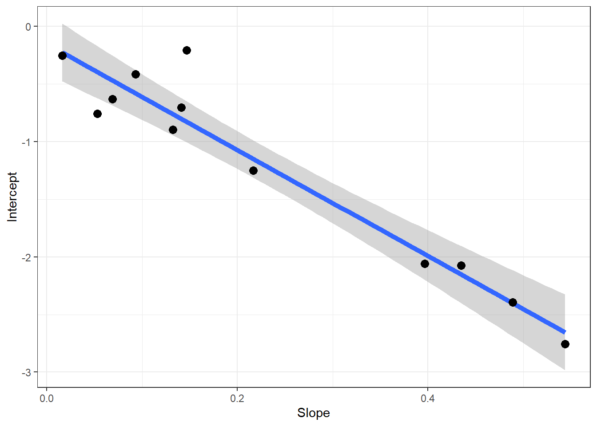

The symbol Rd represents CO2 evolution from mitochondria in the light, other than that associated with the PCO cycle. Mitochondrial oxygen uptake and electron transport associated with normal dark respiration are likely to be inhibited by illumination but CO2 release may continue. For want of a better term we call this “dark respiration”.
Walker 和 Ort (2015) 对于交点的判定给出了详细论述，如上图所示，这几条曲线（或最初的线性）并不是总会完全相交于一点。通常采用的方法是将所有曲线（或直线）的交点进行取均值。实践中，这些点很少收敛于单点，通常移除某交点或重新测量直到交点的标准差在某范围内。但总之会存在一定缺陷，因而 Walker 和 Ort (2015) 对上述方法做了一个改变：
C_i^* = \frac{b1-b2}{m_2 -m_1}
\tag{18.1}
其中 C_i^* 的意义为上文提到的计算的 \Gamma^*, m 表示两条响应曲线线性部分的直线的斜率，b 表示截距。之后再进行计算：
R_d = m C_i^* + b
\tag{18.2}
该方法的基本步骤是：
将每条曲线的 m 值作为 x 轴，b 值作为 y 轴，那么对其做一个标准的线性回归，这条回归线的斜率为：
m_{reg} = \frac{b_2-b_1}{m_2 -m_1}
\tag{18.3}
将其乘以 -1，并整理方程，那么我们可以得到下面的公式：
b=-C_i^* + b_{reg}
\tag{18.4}
那么：
R_d = b_{reg}
\tag{18.5}
18.2 Kok 方法
由于 Kok (1956) 的方法是基于氧气的测量，尽管原则一样，但我不想浪费精力学习现在基本抛弃的测量方式，所以下面的描述基于 Way 等 (2019)：
Call:
lm(formula = Intercept ~ Slope, data = coefs)
Residuals:
Min 1Q Median 3Q Max
-0.36114 -0.10958 -0.05553 0.08166 0.62016
Coefficients:
Estimate Std. Error t value Pr(>|t|)
(Intercept) -0.1526 0.1176 -1.297 0.224
Slope -4.6004 0.4069 -11.307 5.1e-07 ***
---
Signif. codes: 0 '***' 0.001 '**' 0.01 '*' 0.05 '.' 0.1 ' ' 1
Residual standard error: 0.2513 on 10 degrees of freedom
Multiple R-squared: 0.9275, Adjusted R-squared: 0.9202
F-statistic: 127.8 on 1 and 10 DF, p-value: 5.103e-07
通过图形才能很好的反应他使用单条线的斜率和截距来计算的情况：
Code
walker_ort[[2]]

Figure 18.4: 图形方式查看 Walker 的测量方法
数据的结果：
Table 18.2: Walker 的方法测量的结果
GammaStar
r_light
Slope
46.00427
-0.152643
就是这些内容了，属于比较使用的函数。
Brooks, A., 和 G. D. Farquhar. 1985. 《Effect of temperature on the CO2/O2 specificity of ribulose-1,5-bisphosphate carboxylase/oxygenase and the rate of respiration in the light》. Planta 165 (3): 397–406. https://doi.org/10.1007/BF00392238.
Farquhar, G. D., S. Von Caemmerer, 和 J. A. Berry. 1980. 《A biochemical model of photosynthetic CO_2 assimilation in leaves of C3 species.》Planta 149 (1): 78–90.
Walker, Berkley J., 和 Donald R. Ort. 2015. 《Improved method for measuring the apparent CO2 photocompensation point resolves the impact of multiple internal conductances to CO2 to net gas exchange》. Plant, Cell & Environment 38 (11): 2462–74. https://doi.org/https://doi.org/10.1111/pce.12562.
Way, Danielle A., Michael J. Aspinwall, John E. Drake, Kristine Y. Crous, Courtney E. Campany, Oula Ghannoum, David T. Tissue, 和 Mark G. Tjoelker. 2019. 《Responses of respiration in the light to warming in field-grown trees: a comparison of the thermal sensitivity of the Kok and Laisk methods》. New Phytologist 222 (1): 132–43. https://doi.org/https://doi.org/10.1111/nph.15566.
Yin, Xinyou, Zhouping Sun, Paul C. Struik, 和 Junfei Gu. 2011. 《Evaluating a new method to estimate the rate of leaf respiration in the light by analysis of combined gas exchange and chlorophyll fluorescence measurements》. Journal of Experimental Botany 62 (10): 3489–99. https://doi.org/10.1093/jxb/err038.
Yin, X., 和 P. C. Struik. 2009. 《C3 and C4 photosynthesis models: An overview from the perspective of crop modelling》. NJAS - Wageningen Journal of Life Sciences, Recent Advances in CropGrowthModelling, 57 (1): 27–38. https://doi.org/10.1016/j.njas.2009.07.001.